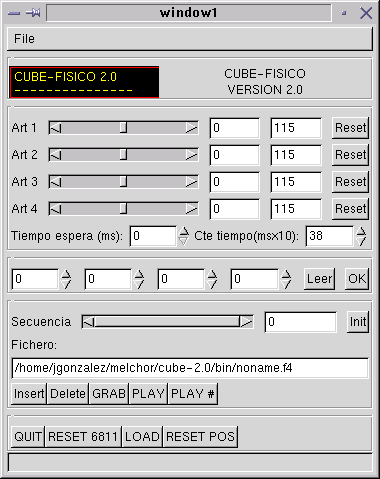

| CUBE 2.0: CONTROL I |
El programa cube-fisico es el que se comunica con la tarjeta CT6811 para controlar la posición de los servos. Esta aplicación está programada en C, utilizando las GTK1.2. Aquí puedes ver un pantallazo:

Este programa permite realizar lo siguiente:
Una vez conectado CUBE al ordenador se ejecuta este programa y se pulsa el botón de LOAD, que carga el programa maestro_ram.s19 en la RAM de la CT6811. A partir de ese momento se establece la conexión entre el interfaz y los servos.
Para la generación de secuencias hay que proceder de la siguiente manera. Primero se posicionan los servos usando las barras de desplazamiento y se pulsa el botón de GRAB. A continuación se colocan en otra posición y se vuelve a pulsar GRAB. De esta manera se genera una secuencia "fotograma a fotograma". Es posible especificar el tiempo de espera de los servos en una posición, antes de pasar a la siguiente.
Para reproducir una secuencia indefinidamente solo hay que pulsar el botón de PLAY, o el botón de PLAY# si se quiere que se reproduzca una sola vez.